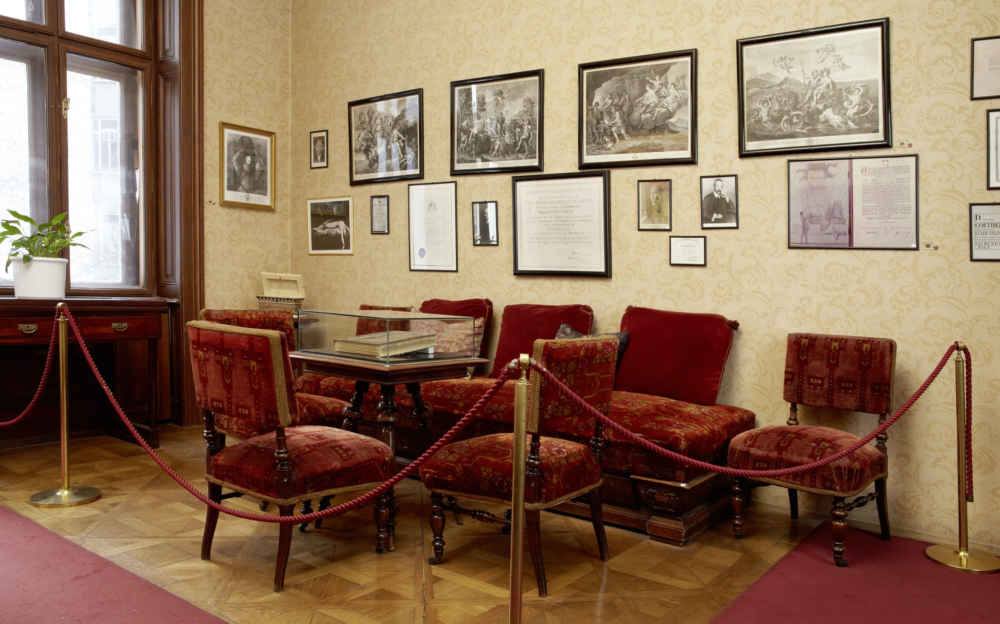

dnevni horoskop dvojcka | eetaq
2021.03.16 14:22
horoskop dnevni horoskop oven bik dvojčka rak lev devica tehtnica škorpijon strelec kozorog vodnar ribi ljubezenski horoskop astrološka znamenja horoskop in darila vedeževanje tarot vedeževanje pomen ure, kolcanja in kihanja sanjska knjiga vedeževalka tarot karta dneva numerologija ljubezenski kalkulator otroška imena - kalkulator srečna številka loto številke bioritem numerološka karta gizmoti kalkulator telesne teže dieta - kalkulator za hujšanje menstrualni koledarček ideje za darila modrček 33t4q šifra fržbunek ee-kartice božične voščilnice novoletne voščilnice voščilnice za rojstni dan ljubezenske voščilnice za vse priložnosti halloween z rožicami modrosti žleht sporočila nasveti status utrip moda lepota imeti ali umreti iz prve roke šmorn teens testi & kvizi rdečica tvoja stvar telopedija S.O.S. (skrivne osebne stvari) odkrito pesmi forum
dnevni Horoskop
jutri ?današnji horoskop Dvojčka
Dvojčka
22. maj - 21. junij Katero pot ubrati? To je vprašanje, ki te pri tvojem delu ves čas preganja. V odnosu do prijateljev in znancev premisli o uporabi pravih argumentov, s katerimi bi lahko ubil/a dve muhi na mah. Ker imaš veliko pomanjkanje denarja, naj te vodi zavedanje, da za uresničitev načrtov potrebuješ somišljenike. nasvet ljubezen denar barve zdravje karizmaVeč o dvojčkih
Lastnosti
Lastnosti dvojčkov
Z ostrim umom in briljantnimi idejami kot so tvoje, težko razumeš, ko se ljudje pritožujejo, da jih zasipaš z informacijami in ti ne zmorejo slediti. Žongliranje z dvema telefonskima pogovoroma, osmimi dopisovalci na chatu, medtem ko bereš revijo in si zraven pečeš jajca,... to pa res ni nič takega. Veliko imaš prijateljev, še več znancev in vsi te radi srečajo, saj jim postrežeš še s svežimi in super sočnimi trači, preden sami uspejo reči „zdravo“.
Sposobnosti
Sposobnosti dvojčkov
Glede na to, da si praktično živeči mulipraktik, se boš najbolje znašel/a v dinamičnih službah, kjer boš večino časa počel/a vsaj tri stvari hkrati. Dobro obvladuješ tako stike z ljudmi, kot tudi rokovanje z najrazličnejšimi napravicami. Zato so primerne službe zate lahko povezane z npr. oglaševanjem, stiki z javnostjo, službe v medijih, raziskovalno novinarsko delo, pa tudi področje računalniškega programiranja in oblikovanja spletnih strani.
Razmerja
Dvojčka in razmerja
Privlačijo te raznoliki karakterji. Vendar pa naj gre za prijateljstvo ali ljubezen, da nekdo pritegne tvojo pozornost, mora prepričati z živahnim umom. Menda se ne boš pogovarjal/a sam/a s sabo! In vsak, ki te res dobro pozna, ve, da v resnici ne „pripadaš“ nikomur. Hkrati lahko ljubiš več ljudi, zaradi različnih razlogov. Kar pa ne pomeni, da ne znaš biti zvest/a v ljubezni!
Te muči, kakšno darilo podariti dvojčku?
Ribe v astrologijiRibe so osebe, ki jih privlači svet onkraj resničnosti... Ljubezen je mavrica
Prijatelj, prijateljica, ljubimec, partnerka, starš, otrok? Ljubezen prihaja v različnih oznakah, ... Valentinov šopek
Kadar svojih čustev ne upaš, ne znaš ali ne zmoreš strniti v besede, naj govorijo cvetovi... Ko srečaš bivšo ali bivšega...
Kaj govorimo in kaj nam gre po glavi, ko srečamo bivše simpatije :) Je bil zmenek dober?
Kako veš, da se vajin zmenek odvija v pravo smer in da oba uživata v družbi drug drugega? Obdarovanje, darila in astrologija
Včasih je najlepše darilo za nekoga zapisano v zvezdah. Na povezavi je vodnik pri obdarovanju ... Ne postavljaj meja ljubezni!
Celo po vsem tem času Sonce nikoli ne reče Zemlji: "Tvoje sem!" Pa poglej kaj se zgodi ljubeznijo, ... Sanje - pomen
Sanje so smerokazi na cesti v podzavest. - eetaq.si Vlado Kreslin - Kaj naj ti prinesem draga?
"Nikaj mi ne nosi. Le srce prinesi nepokvarjeno nazaj." Horoskop in pomembni datumi v februarju 2021
V februarju se bo dogajalo. Valentinovo, Vodnarji in Ribe praznujejo,... Nekateri datumi bodo še ... Paul McCartney - My Valentine
Natalie Portman, Johnny Depp, Paul in njegova prelepa pesem... Kdo je tvoja prava ljubezen?
V ljubezni ne izbira pamet, ampak srce. In nič ni narobe, če se malce poigraš z vprašanjem, kaj ...
Zanimiva dejstva o Dvojčkih
Kadar si v družbi Dvojčka, si pravzaprav v družbi dveh osebnosti. Dvojčki ne štejejo, koliko zvez so imeli v življenju, ampak kolikokrat so se izognili možnosti zveze, da bi bili z osebo, s katero si res želijo biti. Dvojčica je zmožna delati več stvari naenkrat in je v tem tudi zelo hitra in učinkovita. Dvojčica lahko svojemu moškemu nudi občutek, da je najsrečnejši moški na svetu. Dvojčkom je v odnosih najtežje razumeti, kako se drugi počutijo. Dvojčice so svobodne male duše, ki znajo marsikoga spraviti v dobro voljo. Dvojčki radi potihem skrivajo svoje občutke. Ravno toliko kot po vznemirjenjih in avanturah, hrepenijo Dvojčki tudi po stabilnosti in varnosti. Dvojčica bo človeka takoj spregledala. Dojčka zelo privlačijo socialna omrežja in zato bo pred spanjem večkrat preveril novice, tvite, omebe, sporočila, ... Dvojčki so skrivni manipulatorji – vedno dosežejo, da je po njihovem - ne da bi morali delati scene. Dvojčki so v bistvu dve osebnosti v enem telesu: neodločni in negotovi a hkrati prilagodljivi in prijateljski. Dvojčki bodo pogosto ravnali ravno nasprotno, kot bi radi, kar prispeva dodaten vidik njihovi zmedeni naravi. Dvojčki ne zamujajo, ker bi pozabili, ampak ker jih na njihovi poti toliko stvari zmoti. Poskušati razumeti Dvojčke je tako, kot bi poskušal najti rimo na besedo pomaranča. Ne gre! Ne glede na količino komunikacije, ki so je Dvojčki zmožni, so v vsojem bistvu presenetljivo sramežljivi. Za Dvojčke je naslabša kombinacija oseba, ki je površna in hkrati nedosledna. Dvojčki bodo vihali nos nad vsem, kar je dolgočasno. Če želiš ohraniti interes Dvojčka, se mu moraš popolnoma posvetiti. Ne sprašuj Dvojčice, kaj natanko si želi, ker nikoli ne bo povsem prepričana vase. info pravna obvestila piškotki oglaševanje © eetaq.si - Vse pravice pridržane. Reprodukcija celote ali posameznih delov brez pisnega dovoljenja je prepovedana. horoscope today | latin tarot | clairvoyant meaning of time